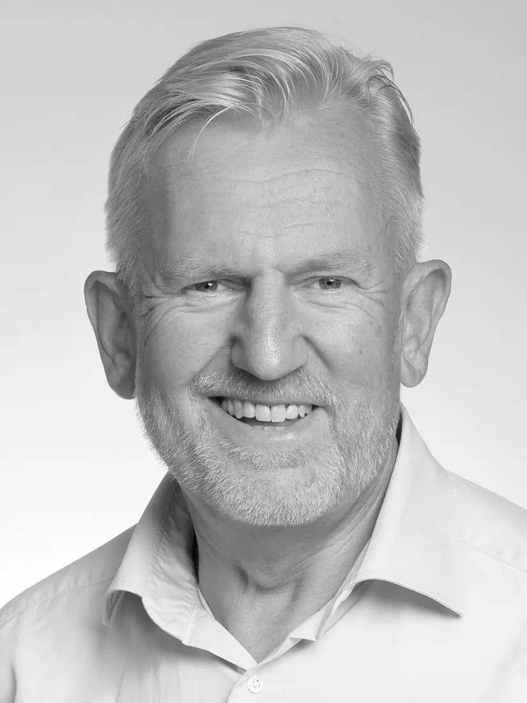

Chronischer Stress am Arbeitsplatz ist mehr als ein Befindlichkeitsproblem – er ist ein ernstzunehmender Risikofaktor für psychische und körperliche Erkrankungen. Schlafstörungen, Erschöpfung, Konzentrationsprobleme, Reizbarkeit oder körperliche Beschwerden wie Kopf- und Rückenschmerzen sind häufige Frühwarnsignale einer Überlastung, die viele Menschen zunächst ignorieren.
Unser Coaching setzt genau hier an – an der Schnittstelle von klinischer Psychologie und Neurowissenschaft. Anders als viele Coaching-Angebote ohne wissenschaftlichen Hintergrund basiert unser Programm auf Methoden, deren Wirksamkeit in klinischen Studien belegt ist. Es wird geleitet von Markus Friedrichs, MSc., M.A. – klinischer Psychologe mit Studium am renommierten Institute of Psychiatry, Psychology and Neuroscience (King's College London) und langjähriger wissenschaftlicher Mitarbeiter am Max-Planck-Institut für Psychiatrie, wo er Methoden zur Erkennung und Prävention von Burnout und Depression entwickelt hat.
Ihr persönliches Beschwerdeprofil verstehen
Im ersten Schritt geht es darum, gemeinsam ein klares Bild Ihrer aktuellen Situation zu gewinnen. Dazu gehört die systematische Erfassung Ihrer Stress-Symptomatik: Welche Beschwerden treten auf? In welchen Situationen? Wie stark ist Ihre Belastung? Wir nutzen hierfür wissenschaftlich validierte Instrumente, wie sie auch in der klinisch-psychologischen Diagnostik eingesetzt werden.
Konkrete, messbare Veränderungen erreichen
Unser Coaching verfolgt Ziele, die sich überprüfen lassen:
- Reduktion von Stresssymptomen: Nachweisbare Verringerung von Erschöpfung, Schlafstörungen, innerer Anspannung und körperlichen Stressbeschwerden – gemessen durch standardisierte Fragebögen (z. B. Perceived Stress Scale, Maslach Burnout Inventory).
- Verbesserung der Erholungsfähigkeit: Wiederherstellung eines gesunden Schlaf-Wach-Rhythmus und der Fähigkeit, nach Belastungsphasen zu regenerieren.
- Aufbau wirksamer Bewältigungsstrategien: Erlernen evidenzbasierter Techniken wie kognitive Umstrukturierung, Verhaltensaktivierung, Achtsamkeitsübungen und Entspannungsverfahren – Methoden, deren Wirksamkeit in kontrollierten Studien belegt ist.
- Stärkung der Selbstregulation: Verbesserung der Fähigkeit, eigene Stressreaktionen frühzeitig zu erkennen und zu steuern – ein zentraler Schutzfaktor gegen chronische Überlastung.
- Langfristige Gesundheitsförderung: Prävention eines Fortschreitens der Symptomatik in Richtung Burnout, Depression oder chronischer Erschöpfung.
Wissenschaftliche Grundlage
Meta-Analysen zeigen, dass strukturierte psychologische Interventionen – insbesondere Ansätze aus Stressmanagement, Achtsamkeit und Verhaltenstherapie – Symptome von Stress, Erschöpfung und depressiver Verstimmung signifikant reduzieren können (Karanika-Murray et al., 2025, JMIR; Vonderlin et al., 2020, J Occup Health Psychol). Die Forschung belegt zudem: Ein Blended-Ansatz, der digitale Methoden mit persönlicher Begleitung durch einen qualifizierten Coach kombiniert, ist besonders wirksam (Karanika-Murray et al., 2025).
2. Wie läuft das Coaching ab?
Ziel: Ein differenziertes Bild Ihrer aktuellen Belastungssituation gewinnen.
- Ausführliches Erstgespräch zur Klärung Ihrer individuellen Situation, Beschwerden und Ziele
- Einsatz standardisierter psychologischer Instrumente zur Erfassung von Stressbelastung, Erschöpfung und Wohlbefinden
- Analyse Ihrer Stressoren: beruflich, privat, strukturell
- Erstellung eines individuellen Belastungs- und Ressourcenprofils
- Gemeinsame Formulierung messbarer Coaching-Ziele
Ziel: Belastung reduzieren und wirksame Strategien einüben.
In dieser Kernphase arbeiten wir gezielt an Ihren individuellen Themen. Je nach Beschwerdeprofil kommen unterschiedliche Methoden zum Einsatz – alle entstammen der klinisch-psychologischen Forschung:
- Kognitive Umstrukturierung: Identifikation und Veränderung stressverstärkender Denkmuster (z. B. Perfektionismus, Katastrophisieren) – ein Kernbaustein der kognitiven Verhaltenstherapie.
- Verhaltensaktivierung: Systematischer Wiederaufbau positiver, energiegebender Aktivitäten, um der Spirale aus Rückzug und Erschöpfung entgegenzuwirken.
- Achtsamkeitsbasierte Techniken: Übungen zur bewussten Wahrnehmung und Regulation von Stressreaktionen – basierend auf Programmen wie MBSR (Mindfulness-Based Stress Reduction) nach Jon Kabat-Zinn.
- Entspannungsverfahren: Progressive Muskelentspannung und atembasierte Techniken zur Aktivierung des parasympathischen Nervensystems.
- Schlafhygiene und Erholungsmanagement: Evidenzbasierte Strategien zur Verbesserung der Schlafqualität.
- Bewegung und körperliche Aktivierung: Aufbau eines individuell passenden Bewegungsprogramms – die Forschung zeigt, dass bereits moderate körperliche Aktivität Stress, depressive Symptome und Erschöpfung signifikant reduziert (Singh et al., 2023, BJSM). Wir erarbeiten gemeinsam, welche Form von Bewegung oder Sport in Ihren Alltag passt und nachhaltig wirkt.
- Abgrenzung und Belastungssteuerung: Erarbeitung von Strategien für den Umgang mit Arbeitsanforderungen, Grenzsetzung und Priorisierung.
Die Sitzungen finden in der Regel wöchentlich oder 14-tägig statt, je nach Ihrem Bedarf und Zeitplan.
Ziel: Gelerntes im Alltag verankern und Rückfällen vorbeugen.
- Überprüfung der Zielerreichung anhand der Ausgangsmessungen
- Erstellung eines persönlichen Handlungsplans für langfristige Stressbewältigung
- Erarbeitung eines Frühwarnsystems: Welche Signale zeigen Ihnen künftig, dass Sie gegensteuern müssen?
- Abschließende Evaluation und optionale Follow-up-Sitzungen nach 4–8 Wochen
- Flexibilität im Ablauf: Die Phasenlänge ist individuell anpassbar. Bei einer leichteren Belastung kann ein kürzeres Programm (6–8 Sitzungen) ausreichend sein. Bei komplexeren Beschwerdebildern oder wenn eine parallele psychotherapeutische Anbindung sinnvoll erscheint, besprechen wir das offen und unterstützen Sie bei der Orientierung.
Nachweisbare Verbesserungen: Basierend auf der aktuellen Forschungslage und unserer klinisch-psychologischen Expertise können Sie bei regelmäßiger Teilnahme und Umsetzung folgende Ergebnisse erwarten:
- Spürbare Stressreduktion: Zahlreiche randomisierte kontrollierte Studien zeigen, dass psychologisch fundierte Stressinterventionen zu einer signifikanten Verringerung des subjektiven Stresserlebens führen – mit Effektstärken, die klinisch bedeutsam sind (Amanvermez et al., 2022, Psychol Bull).
- Besserer Schlaf und mehr Energie: Verhaltensbasierte Schlafinterventionen gehören zu den wirksamsten nicht-pharmakologischen Maßnahmen bei stressbedingten Schlafstörungen.
- Mehr Handlungsfähigkeit: Klient*innen berichten regelmäßig, dass sie nach dem Coaching-Prozess besser in der Lage sind, Prioritäten zu setzen, Grenzen zu ziehen und aktiv Einfluss auf ihre Arbeitssituation zu nehmen.
- Langfristiger Schutz: Wer frühzeitig wirksame Bewältigungsstrategien erlernt, kann das Risiko für eine Burnout-Entwicklung oder eine depressive Episode deutlich senken.
- Klinisch-psychologische Expertise und evidenzbasierte Methoden: Jede eingesetzte Technik hat ihre Grundlage in der klinisch-psychologischen Forschung – nicht in Esoterik, Intuition oder „Erfahrungswissen".
- Diagnostische Fundierung: Wir arbeiten mit den gleichen validierten Messinstrumenten, die in der klinischen Forschung und Therapie zum Einsatz kommen – für eine transparente, überprüfbare Einschätzung Ihrer Belastung und Ihrer Fortschritte.
- Grenzklarheit: Coaching ersetzt keine Psychotherapie. Wenn im Verlauf erkennbar wird, dass eine therapeutische Behandlung sinnvoll oder notwendig ist, kommunizieren wir das offen und unterstützen Sie bei der Weiterleitung.
Mehr Bewegung, weniger Stress: Körperliche Aktivität als Therapiebaustein: Körperliche Aktivität ist eine der am besten erforschten Maßnahmen zur Verbesserung der psychischen Gesundheit. Eine große Umbrella-Review mit über 128.000 Teilnehmer*innen zeigt, dass regelmäßige Bewegung Symptome von Depression, Angst und psychischer Belastung mit mittleren Effektstärken reduziert – vergleichbar mit manchen psychotherapeutischen Interventionen (Singh et al., 2023, British Journal of Sports Medicine). Dabei gilt: Schon moderate Aktivität wie zügiges Gehen oder Radfahren reicht aus, um messbare Verbesserungen zu erzielen. Eine aktuelle Studie der University of Michigan bestätigt, dass Beschäftigte mit moderatem Bewegungsverhalten weniger emotionale Erschöpfung und mehr berufliche Zufriedenheit erleben als inaktive Kolleg*innen (Albedry et al., 2025, University of Michigan).
Die Wirkmechanismen sind gut erforscht: Bewegung fördert die Ausschüttung von BDNF (Brain-Derived Neurotrophic Factor), verbessert die Stressregulation über die Hypothalamus-Hypophysen-Nebennierenrinden-Achse und steigert Selbstwirksamkeit und Erholungsfähigkeit (Schuch & Stubbs, 2019). Deshalb integrieren wir körperliche Aktivität und Sport gezielt als Baustein in unser Coaching-Programm.
Ihr Coaching, ergänzt durch actiself
Auf Wunsch können wir Ihr Coaching um unsere eigens entwickelte Anwendung actiself erweitern. In Verbindung mit einem handelsüblichen Wearable (z. B. Smartwatch oder Fitness-Tracker) unterstützt actiself Sie dabei, gesundheitsfördernde Verhaltensweisen in Ihren Alltag zu integrieren – mit einem besonderen Fokus auf Bewegung und körperliche Aktivierung.
Wie funktioniert das?
- Sie tragen im Coaching-Zeitraum ein kompatibles Wearable und nutzen die actiself-App
- Die App erfasst Ihr Bewegungsverhalten, Ihre Schlafqualität und Ihre Erholungsfähigkeit und gibt Ihnen täglich evidenzbasierte Übungen aus den Bereichen Stressbewältigung, kognitive Umstrukturierung, Schlafhygiene und Verhaltensaktivierung
- actiself motiviert Sie gezielt zu mehr körperlicher Aktivität – abgestimmt auf Ihr aktuelles Belastungsniveau und Ihre Möglichkeiten
- In den Coaching-Sitzungen nutzen wir die gesammelten Daten, um Ihr Coaching noch spezifischer auf Ihr individuelles Beschwerde- und Verhaltensprofil auszurichten: Wie hat sich Ihr Bewegungsverhalten verändert? Wird Ihr Schlaf erholsamer? Steigt Ihr Aktivitätsniveau?
Warum ist das sinnvoll?
Aktuelle Forschung zeigt, dass die Kombination von digitalen Gesundheitsinterventionen mit persönlicher Begleitung durch einen Coach die Wirksamkeit beider Ansätze steigert (Karanika-Murray et al., 2025, JMIR). Das gilt insbesondere für die Steigerung körperlicher Aktivität: Studien belegen, dass Teilnehmer*innen, die einen menschlichen Coach im Rahmen einer digitalen Intervention nutzen, eine bessere Adhärenz zeigen, mehr Zeit mit der Intervention verbringen und nachhaltigere Verhaltensänderungen erreichen (Lentferink et al., 2025, Frontiers in Digital Health). Wearable-Daten ermöglichen dabei eine objektivere Erfassung von Aktivitätsmustern und Erholungsparametern, als sie allein durch Selbstberichte möglich wäre (Quiroz et al., 2023, Healthcare).
Die actiself-Anwendung wurde am Max-Planck-Institut für Psychiatrie entwickelt und enthält ausschließlich Inhalte, die auf evidenzbasierten Elementen der Verhaltenstherapie beruhen.
Die Nutzung von actiself ist optional und wird separat berechnet.
Klinischer Psychologe | Neurowissenschaftler | Zertifizierter Coach (ICF)

Markus Friedrichs verbindet klinisch-psychologische und neurowissenschaftliche Expertise mit langjähriger Berufserfahrung als Führungskraft.
Akademische Ausbildung:
- MSc. Psychology / Neuroscience – Institute of Psychiatry, Psychology and Neuroscience, King's College London.
- M.A. Amerikanistik, Germanistik, Pädagogische Psychologie – Universität Hamburg
Klinische und wissenschaftliche Erfahrung:
- 2018–2024: Wissenschaftlicher Mitarbeiter am Max-Planck-Institut für Psychiatrie – Entwicklung neuer Methoden zur Erkennung und Prävention von Burnout und Depression
- Entwickler der actiself-Präventionsanwendung
Klinisch-psychologische Weiterbildungen (Auswahl):
- Verhaltenstherapeutische Techniken (CIP Centrum für integrative Psychotherapie)
- Verhaltenstherapie bei Depressionen (Kirinus CIP Akademie)
- Psychiatrische Diagnostik nach ICD-11 (Kirinus CIP Akademie)
- Grundlagen der Schematherapie (MPI Psychiatrie)
- Verhaltensaktivierung (MPI Psychiatrie)
- Stressmanagement-Trainer (AHAB Akademie)
- Progressive Muskelentspannung (fitmedi Akademie)
Mitgliedschaften:
- International Coaching Federation (ICF)
- American Psychological Association (APA)
Praktische Informationen
- Kosten: 150 € pro Sitzung (60 Minuten). Ermäßigung für Studierende, Auszubildende und Erwerbslose.
- Format: Online und in Präsenz (München)
- Stundenzahl: Individuell – keine Mindestabnahme.
- Erstgespräch: Kostenfrei und unverbindlich.
Kontakt: Markus Friedrichs E-Mail: markus.friedrichs@neomentric.com Telefon: 089 / 2153 8520
Zitierte Forschung und weiterführende Quellen:
- Karanika-Murray, M., et al. (2025). Optimizing Workplace Digital Mental Health Interventions: Systematic Review and Meta-Analysis. Journal of Medical Internet Research, 27(1), e71253.
- Amanvermez, Y., et al. (2022). Stress management interventions for college students: A meta-analysis. Psychological Bulletin, 148(3-4), 115–147.
- Vonderlin, R., et al. (2020). Mindfulness-based programs in the workplace: A meta-analysis of randomized controlled trials. Mindfulness, 11, 1579–1598.
- Singh, B., et al. (2023). Effectiveness of physical activity interventions for improving depression, anxiety and distress: an overview of systematic reviews. British Journal of Sports Medicine, 57(18), 1203–1209.
- Schuch, F. B., & Stubbs, B. (2019). The role of exercise in preventing and treating depression: A meta-review of evidence. Current Sports Medicine Reports, 18(8), 286–291.
- Albedry, B., et al. (2025). The Relationship Between Employee Physical Activity Intensity and Workplace Burnout: A Cross-sectional Study. University of Michigan School of Kinesiology.
- Quiroz, J. C., et al. (2023). Wearables for Stress Management: A Scoping Review. Healthcare, 11(17), 2369.
- Lentferink, A., et al. (2025). Systematic review exploring human, AI, and hybrid health coaching in digital health interventions. Frontiers in Digital Health, 7, 1536416.
- Haslam, A., et al. (2024). Systematic Review and Meta-Analysis of Randomized Trials Testing Interventions to Reduce Physician Burnout. The American Journal of Medicine, 137(3), 249–257.
- Kracht, C. L., et al. (2025). Effectiveness of workplace interventions for health promotion. The Lancet Public Health, 10(6), e371–e389.
- DAK-Gesundheitsreport (2024). Psychische Erkrankungen und Arbeitsunfähigkeit. Deutsche Angestellten-Krankenkasse.